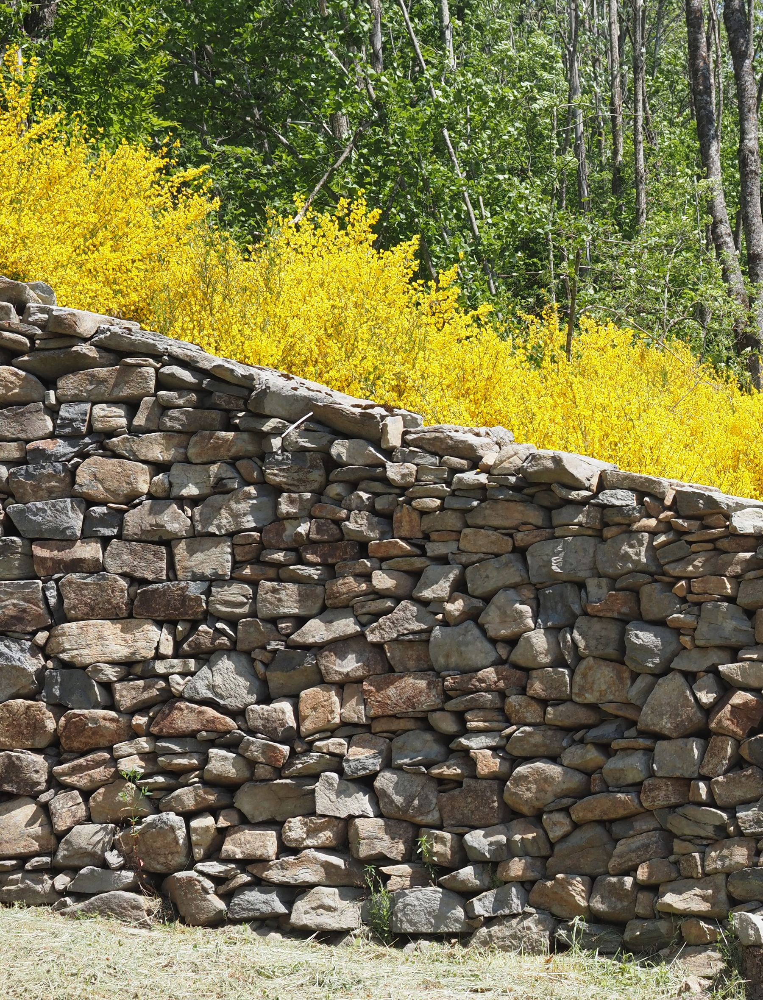

Rehabilitation of the garden site Jardin Clos du Pré Nouveau d'Arcens in Ardèche
International Terraced Landscapes Alliance Journal volume 2, issue 2, pp. 6–17 (2021) · Cite this article
- 276 views
- 771 downloads
- DOI10.5281/zenodo.8177269

Abstract
The rehabilitation of the terraced site with historic and socio-economic values invites citizens to participate and learn about this particular cultural landscape. The inauguration of the terraced garden in May 2022 gathered local, regional and international authorities and activists who recognised the local group efforts initiated by Monique Gadais. In the future it will contribute to the public well-being as well as a reconstruction in favour of the environment.
The Jardin Clos du Pré Nouveau, a terraced garden in Arcens, is an emblematic site built at the end of the 19th century. Threatened by a deforestation project, it was saved thanks to the intervention of a member of the local heritage association. The commune has acquired the plot and is working with the associations to save and rehabilitate the site.


Thanks to the donations, the site was completely deforested, after which the dry stone constructions and terraces could be restored under the guidance of Louis Cagin. Finally, a collaborative orchard and the creation of a public garden will conclude this project. It is planned that this work will be carried out in the context of days open to the public where everyone will come to participate and learn about the site.

An emblematic site from the end of the 19th century
Built on the southern slope of the geosite of the volcanic rock of Soutron, this terraced garden is surrounded by low walls made of phonolite stones taken from the site. This enclosed garden is a real monument: it closes off a space that is different from all the others, a sort of “corner of paradise”. In the middle of imposing terraces planted with Douglas Fir in the 1960s (Figure 1), there is a superblock and an arched shelter, built into imposing retaining walls sometimes exceeding 4 metres in height (Figue 2 and 3).
Similarly, numerous flying staircases allow communication between the different terraces (Figure 4). This unique garden of terraces, located on the geosite of Soutron, constitutes, with the charming chapel implanted at the top of the rock, the second cultural and tourist treasure of this remarkable site of the Unesco World Geopark of the Monts d’Ardèche.

A territory, inhabitants and associations united around the project
Local authorities, schools and heritage associations are participating in the safeguarding and rehabilitation of this little “corner of paradise”. This garden will be used as an educational tool for the organisation of participative work camps for dry stone work and maintenance (volunteers, refugees...). The quality of the soil makes it possible to set up a communal orchard to continue educational work on the preservation and maintenance of fruit trees. Just like the dry stone garden courses, fruit tree maintenance operations, open to all, could be organised.
An educational project is being set up with the local school in Arcens: based on knowledge of both the fundamental elements of the site and the history of the place, the students will follow the renovation of the site. As this emblematic site and its landscape environment are conducive to the organisation of cultural events and activities by associations, a central space will remain free on the lower terrace.
The project to rehabilitate the Jardin Clos du Pré nouveau is complete. The site contributes to the heritage, natural and cultural enhancement of the area.
The inauguration of the Jardin Clos du Pré Nouveau took place on Friday 20 May with the partners who financed the rehabilitation project or their representatives, the deputy and senator of the Ardèche, the ITLA coordinator, the participants and the people who supported it (Figure 5 and 6). The rehabilitation project of this site, admired by many people and structures, received the support of the Fondation du patrimoine, the Department of Ardèche, the Auvergne-Rhône-Alpes Region, the Monts d’Ardèche Regional Nature Park, the local Crédit Agricole and the Crédit Agricole Pays de France Foundation, local associations and about sixty private, individual or institutional donors (Figure 7).
A large-scale project
The mayor, Thierry Girot, recalled the history of the place, which, according to the studies undertaken, began at the end of the XIXth, and that of the project, which was conceived and led by the heritage association Arcade of Arcens village.


The origin of the project is an information from Gilbert Clément, a resident of the hamlet of Massas, who reported in 2015 that a “construction with four-metre dry stone walls and lost in a Douglas fir forest was in danger of disappearing”.
Alerted by the Arcade association led by Monique, the town council decided to buy the plots of land on which the buildings were located and a rehabilitation project was launched, as well as a search for funding. “The clearing of the forest was carried out in 2019 without damage by Lévêque company and the dry stone waller Louis Cagin carried out two campaigns to restore the walls in 2020 and 2021”. The mayor added that “the site belongs to all those who wish to make the most of it” and that “an event on the site is planned in August for everyone”. Monique Gadais, president of Arcade, was keen to point out that the village school had been involved in the project from the outset.
An exceptional site
The various speakers were unanimous in describing this site as exceptional, as it is one of those “that require a collective fight to keep them alive” for Senator Mathieu Darnaud, and on the importance of the project, which “gives the population a use that will make them proud” for the Fondation du Patrimoine. The MP Hervé Saulignac invited us to reflect on “what the economy was yesterday, what it is today, and why not what it will be tomorrow”. Do the terraces have a role to play? Isabelle Massebeuf, regional councillor and vicepresident of the NRP, is certainly convinced of this, as she recalled that her institution had launched a dry stone programme. Timmi Tillmann, coordinator of ITLA at global level, highlighted the potential of terraces for the production of food, the advantages of terraced landscapes and their contribution to the mitigation of the climate chaos.
Further information: https://www.youtube.com/watch?v=Tl-n-uo1huo&t=4s
Rights and permissions
Open Access. This article is licensed under a Creative Commons CC BY 4.0 license, which permits use, sharing, adaptation, distribution and reproduction in any medium or format, as long as you give appropriate credit to the original author(s) and the source and indicate if changes were made.
About this article
Cite this article
Gadais, M. (2021). Rehabilitation of the garden site Jardin Clos du Pré Nouveau d'Arcens in Ardèche. International Terraced Landscapes Alliance Journal, 2(2), 6–17. https://doi.org/10.5281/zenodo.8177269
- Published
- December 2021
- Issue
- Volume 2, Number 2
- Journal
- International Terraced Landscapes Alliance Journal, ISSN 2754-7639 (Online)
- Archive
- Zenodo record 8177269